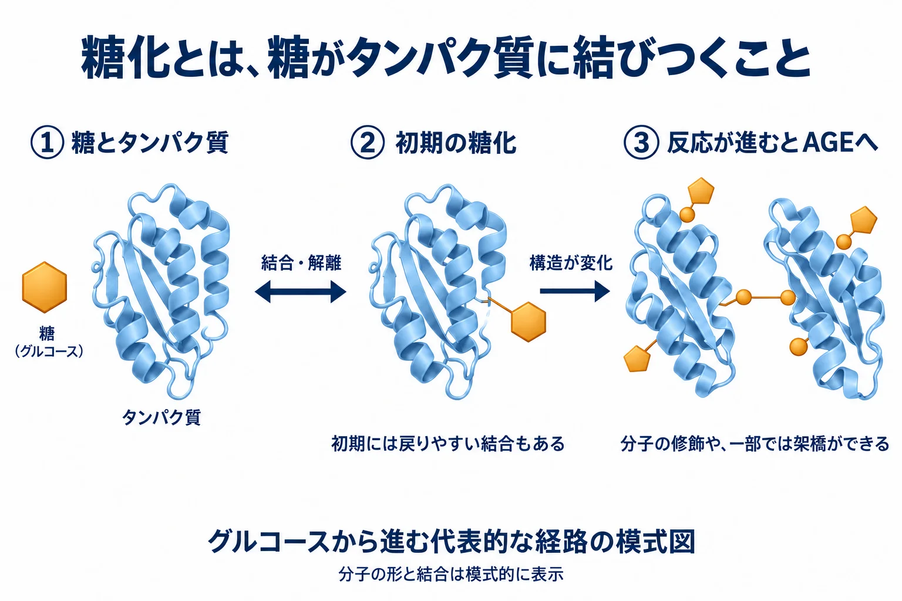
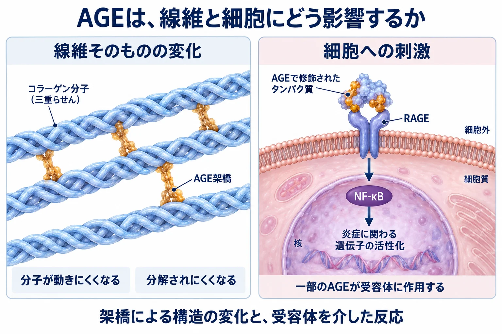
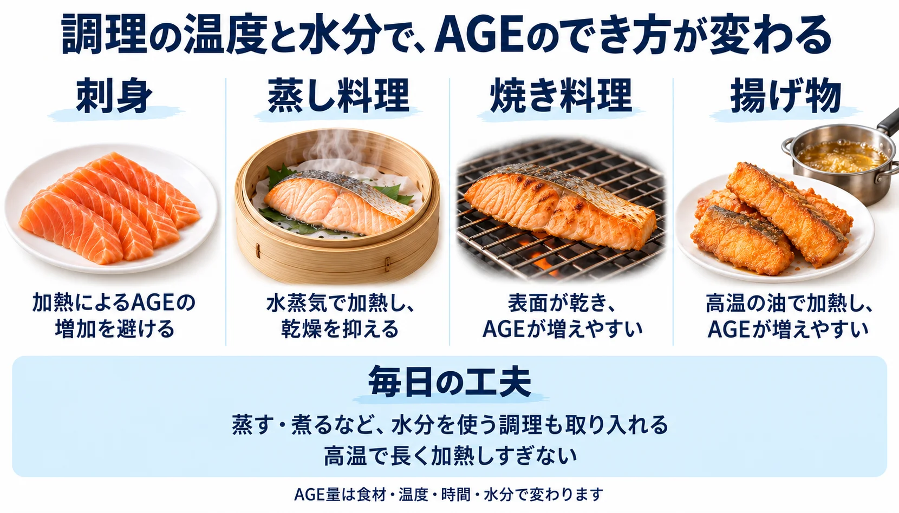

美容皮膚科 ／ 組織の生化学
糖化とAGE長く残るタンパク質に積み重なる変化
公開 2026-09-17
糖化（glycation）とは、糖がタンパク質などに、酵素の働きを介さず化学的に結びつくことです。 ここでは、皮膚を支えるタンパク質の糖化を見ていきます。
体内の糖は、エネルギー源として使われる一方で、周囲のタンパク質とも少しずつ反応します。コラーゲンやエラスチンもその対象です。糖が結びつき、さらに反応が進むと、タンパク質の形や働きが変わったり、分子同士が余分な結合でつながったりします。
このような反応から生まれる多様な物質を、AGEs（advanced glycation end products：終末糖化産物）と呼びます。長く残る線維では、こうした変化が積み重なり、硬さや分解されやすさに影響します。
線維の構造や役割は線維芽細胞とコラーゲンと弾性線維と膠原線維で扱います。ここでは、糖化がどう進み、組織に何を起こすかを見ていきます。
この章の一言
糖化はタンパク質の性質を変え、長く残る線維に蓄積します。AGEの形成を抑えることと、すでに変化した組織を更新することの両方が重要です。
1 糖化は、どのように進むのか
AGEには、体内で作られるものと、食品から入るものがある
体内では、血液や組織にある糖がタンパク質と反応し、AGEが作られます。 この反応は通常の血糖でも少しずつ進みますが、高血糖が続くと、タンパク質が多くの糖に長くさらされ、糖化とAGE形成が進みやすくなります。血糖管理は、この体内での形成を抑えることにつながります。Monnierら, 1999
食品の中でできたAGEを、食事から取り込む経路もあります。 焼く・揚げるなどの高温で水分の少ない調理では、食品中でAGEが増えやすくなります。食べたAGEの一部は、消化・吸収を経て体内に入ります。食品中のAGE量は、焦げの有無だけでなく、食材や加熱時間、水分などでも変わります。Uribarriら, 2010、食事介入試験, 2022
糖化への対策は、体内での形成を抑えることと、食品由来のAGEへの曝露を減らすことから考えます。皮膚にどれだけ蓄積するかには、その後の代謝・排泄や、組織の更新も関わります。
糖が結びついてから、AGEになるまで
グルコースなどの糖は、タンパク質のアミノ基と反応します。この結合は酵素の働きを必要とせず、体温でも進みます。酵素によって糖鎖を付ける「糖鎖修飾」とは、別の過程です。
グルコースから始まる代表的な経路では、次のように反応が進みます。
| 段階 | タンパク質に起きること |
|---|---|
| Schiff base（シッフ塩基） | 糖がアミノ基と結びつく初期段階。結合はできたり外れたりする |
| Amadori（アマドリ）産物 | 分子内の構造が変わり、比較的安定した初期糖化産物になる |
| AGEs | さらに酸化・脱水・再配列などを経て、多様な修飾や架橋ができる |

HbA1cも初期糖化産物の一つです。赤血球が循環する間の血糖への曝露を反映するため、血糖管理の指標に使われます。
AGEは、糖の代謝などで生じるmethylglyoxal（メチルグリオキサール）のような、反応性の高い物質からもできます。糖の濃度、反応する物質の量、酸化ストレス、タンパク質が組織に残る時間などが、形成と蓄積に関わります。
詳しく：細胞には、糖化の負担を減らす仕組みがある
細胞内では、glyoxalase（グリオキサラーゼ）系と還元型グルタチオン（GSH）が、メチルグリオキサールの処理に働きます。
まず、メチルグリオキサールがGSHと一時的に結合します。glyoxalase-I（GLO-1）がこの結合体をS-D-lactoylglutathioneへ変え、glyoxalase-II（GLO-2）が加水分解すると、D-乳酸とGSHが生じます。GSHはこの過程で再び遊離し、次の反応に使われます。 タンパク質に反応しやすい前駆体を処理することで、新しい糖化を抑えます。
培養血管内皮細胞では、GLO-1の発現を増やすと、高グルコース条件でのメチルグリオキサールとAGEの増加が抑えられました。GSHは、酸化ストレスへの対応に加えて、こうした糖化の前駆体の処理にも関わります。Shinoharaら, 1998
初期糖化を受けた細胞内タンパク質には、fructosamine 3-kinase（FN3K）による修復も働きます。この酵素を欠くマウスでは、複数の組織の細胞内タンパク質で糖化が増加しました。こうした前駆体の処理や初期段階の修復は、成熟したECMのAGE架橋を取り除く仕組みとは区別して考えます。Veiga da-Cunhaら, 2006
2 長く残る線維に、変化が積み重なる
組織に残る時間が長いタンパク質ほど、糖や反応性の高い物質に繰り返しさらされます。コラーゲンや成熟エラスチンでは、糖化による変化が蓄積しやすくなります。
蓄積量は、作られる量と、修飾されたタンパク質が除去・更新される速さで変わります。AGE架橋をその場で切り離すことと、架橋を含むタンパク質ごと分解して更新することは、異なる過程です。 糖化した線維では、分解を受けにくくなることが更新の難しさにつながります。
AGEには、タンパク質を結ぶ「架橋型」と、分子の一部を修飾する「非架橋型」があります。
| 代表的なAGE | どのような変化か | 皮膚で知っておきたいこと |
|---|---|---|
| glucosepane（グルコスパン） | lysineとarginineを結ぶ架橋。非蛍光性 | ヒト皮膚コラーゲンで量的に主要なAGE架橋。長く残る線維の架橋の蓄積を考えるときに重要 |
| pentosidine（ペントシジン） | lysineとarginineを結ぶ架橋。蛍光性 | 組織の糖化・糖酸化の指標として測定される。蛍光を利用した評価にも関わる |
| CML（カルボキシメチルリジン） | lysine残基にできる非架橋型の修飾。非蛍光性 | 抗体染色や化学分析で、修飾の分布や蓄積を調べる指標になる |
グルコスパンは「架橋の蓄積」、ペントシジンは「蛍光を持つ架橋」、CMLは「架橋を作らない修飾」として押さえると、研究で何を測っているかが読みやすくなります。ヒト皮膚コラーゲンでは、グルコスパンやCMLの加齢に伴う蓄積が報告されています。Sellら, 2005、Dunnら, 1991
CMLは、日光にさらされたヒト皮膚でも多く観察されます。CMLの増加はタンパク質の修飾を示す所見であり、架橋の量を知るにはグルコスパンなどを別に調べます。Crisanら, 2013
3 ECMの性質と、細胞への刺激が変わる
線維が硬くなり、分解されにくくなる
コラーゲンでは、AGE架橋によって分子同士の動きが制限され、線維の硬さが増します。糖化修飾したコラーゲンを用いた酵素実験では、MMPによる分解を受けにくくなることも示されています。修飾の種類や程度によって、分解への影響は変わります。Panwarら, 2018
正常な線維を作る際にも、LOXなどによる架橋が必要です。糖化による架橋は、線維の組み立てに伴うこの架橋に追加され、長年にわたって組織の性質を変えていきます。
エラスチンにも糖化修飾が起こります。ヒト皮膚では弾性線維へのAGE蓄積が観察されており、取り出したエラスチンを使う実験では、糖化による硬さや伸縮の性質の変化が報告されています。両線維の傷み方と実験で分かっている範囲は弾性線維と膠原線維で比較しています。
新しいコラーゲンを作ることに加え、こうした分解されにくい成分がどの程度除去されるかも、組織の再構築を考えるうえで重要です。糖化の程度と美容治療への反応との関係は、治療後の組織や機能を調べて確かめる必要があります。
RAGEを介して、炎症に関わる遺伝子が働く
一部のAGEで修飾されたタンパク質は、細胞表面のRAGE（receptor for advanced glycation end products）という受容体に結合します。これにより、炎症に関わる遺伝子の働きを調節するNF-κBなどが活性化し、酸化ストレスや炎症反応につながります。AGEで修飾したアルブミンを用いた内皮細胞の実験などで、この反応が確認されています。Yanら, 1994
つまり、糖化はECMそのものの性質と、細胞が受け取る刺激の両方に影響します。受容体を介する反応の強さは、AGEの種類や細胞の状態によって異なります。炎症と酸化ストレスの仕組みは炎症と創傷治癒と酸化ストレスと抗酸化で扱います。

4 糖化を抑えるには
体内での形成を抑え、紫外線による損傷を減らす
高血糖が続く状態への対応は、糖化の負担を減らすうえで重要です。1型糖尿病の患者216人の皮膚を調べたDCCTの付随研究では、長期に強化血糖管理を受けた群で、コラーゲンの糖化・糖酸化・架橋に関する指標が低くなっていました。これは、血糖への曝露を抑えることが皮膚にも反映されるヒトでの知見です。Monnierら, 1999
日常で取り組めることは、糖への曝露と、皮膚に加わる損傷を減らすことです。
| 取り組み | 何につながるか |
|---|---|
| 食事・運動を通じて血糖を管理する | 高血糖が続く状態に対応し、糖への過剰な曝露を減らす。糖尿病がある場合は治療も含めて管理する |
| 日焼け止め、衣類、帽子、日陰を使う | 紫外線による酸化ストレスと線維の損傷を減らす |
| 調理法を組み合わせる | 焼く・揚げる調理に偏らず、蒸す・煮るなど水分を使う方法も取り入れ、食品中でのAGE形成を抑える |
紫外線対策は、糖化した成分が残る皮膚でも重要です。日光曝露部でのCML蓄積の観察に加え、日焼け止めを日常的に使用することで光老化の進行が抑えられたヒト研究があります。糖化と光老化の両方を考えて、線維への損傷を減らします。Crisanら, 2013、Hughesら, 2013
食品の中でもAGEができる
食品でも、糖とタンパク質などの反応からAGEができます。生成量は食材と温度・時間・水分・酸性度によって変わります。食品分析では、乾いた高温での加熱に比べ、水分を使った調理や、酢・レモン汁などによる下処理で、測定したAGEが少なくなることが示されています。Uribarriら, 2010

食品中のAGE量、体内に吸収される量、皮膚に蓄積する量は、それぞれの段階で評価する必要があります。 調理の工夫は食事由来の曝露を減らす方法として考え、皮膚の架橋やしわへの効果は別に検証します。
詳しく：食事のAGEを減らすと、体内では何が変わるか
低AGE食と高AGE食を4週間比較した腹部肥満のある成人73人の無作為化試験では、摂取量に応じて血液・尿中の特定のAGEが変化しました。一方、インスリン感受性、血管機能、全体的な炎症の指標には群間差が認められませんでした。食事由来のAGEが体内の測定値に反映されることと、その変化が組織機能の改善につながることを、それぞれ調べる必要があります。食事介入試験, 2022
詳しく：抗糖化成分は、どこに働きかけるのか
研究されている作用には、反応性の高い物質を捕捉すること、酸化反応を抑えること、GLO-1などの前駆体処理を促すことがあります。ピリドキサミン（ビタミンB6の一型）、カルノシン、ポリフェノール類などが調べられています。
ピリドキサミンによるAGE形成の抑制はタンパク質を使う実験で、カルノシンによる反応性カルボニル化合物の捕捉はヒトの摂取研究でも検討されています。また、ケルセチンの摂取で血中メチルグリオキサールが低下したヒト試験もあります。成分ごとに、対象と測定した作用が異なります。ピリドキサミンの実験、カルノシンのヒト研究、ケルセチンのヒト試験
製品の効果を評価するときは、使った量と投与経路、皮膚への到達、皮膚で測ったAGEや機能の変化まで確認します。前駆体の処理や形成抑制の研究は、既存の皮膚架橋の減少を目指す研究へつながる基礎になります。
蓄積した成分への介入
蓄積したAGEへの介入には、反応の段階ごとに異なる目標があります。
| 目標 | 変えようとしていること | 現時点で分かっていること |
|---|---|---|
| 形成を抑える | 糖や反応性の高い前駆体への曝露を減らし、新しい修飾を抑える | 取り組める対策がある。 長期の血糖管理で皮膚コラーゲンの糖化指標が低くなるヒトの知見がある。食品中のAGE形成も調理条件で減らせる |
| 修飾された成分を減らす | AGEで修飾されたタンパク質を分解・除去し、新しい成分へ更新する | 皮膚のAGE蓄積を減らす治療としては未確立。 生体の除去・更新の仕組みはあるが、治療で既存の修飾成分をどれだけ減らせるかは研究段階 |
| 既存の架橋に直接働きかける | すでにできたAGE架橋の化学結合を切り離す | 皮膚の治療としては未確立。 ヒト皮膚で既存のAGE架橋を安全に減らし、機能回復まで示す検証が必要 |
皮膚に蓄積したAGE架橋を安全に減らし、構造や機能の回復まで示す治療の確立が課題です。 「抗糖化」の効果を読むときは、形成の抑制を測ったのか、既存成分の減少を測ったのかを確認します。
詳しく：RFと、糖化の前駆体を処理する仕組み
加齢マウスの皮膚にRFを照射した研究では、約4週後に、細胞の防御応答を調節するNRF2の活性化を示す所見、GLO-1の発現増加、AGEの測定値低下が報告されています。コラーゲンと弾性線維の染色密度も増加しました。糖化の前駆体を処理する仕組みが、RF後の変化に関わる可能性を示す研究です。Ohら, 2022
使用したのはPOTENZAの非侵襲ダイヤモンドチップで、モノポーラとバイポーラの組み合わせを比較しています。各群3匹の動物研究で、AGEは抗体を用いて評価されました。GLO-1の発現増加とAGE測定値の低下が観察されており、前駆体の処理速度や、既存のglucosepane架橋がどれだけ除去されたかについては、さらに検証が必要です。
詳しく：すでに糖化した皮膚への研究も進んでいる
摘出したヒト皮膚を実験的に糖化させ、FN3Kなどの酵素で処理した研究では、自家蛍光の低下が報告されています。摘出した肥厚性瘢痕1例については、伸展性の変化も調べられました。糖化した組織への介入を探る研究です。De Deckerら, 2023
この研究で主に評価したのは、実験条件下での蛍光や組織の性質です。実際の治療として評価するには、生体の皮膚でどのAGEがどれだけ減るか、機能の改善が続くか、安全に使えるかを確かめる必要があります。
AGEの蓄積をどう調べるか
AGEには多くの種類があり、蓄積の目安を知りたいのか、どこにあるかを見たいのか、特定のAGEの量を測りたいのかによって、方法を選びます。
| 方法 | 何をするか | 分かること |
|---|---|---|
| 皮膚自家蛍光 | 皮膚に光を当て、発せられる蛍光を測る | 皮膚を採取せず、AGE蓄積の間接的な指標を得る |
| 抗体染色 | 採取した皮膚組織に、CMLなどを認識する抗体を反応させる | 対象の修飾が、どの細胞や組織に分布しているかを見る |
| 化学分析・質量分析 | 採取した組織を処理し、目的のAGEを分離・測定する | グルコスパン、CMLなど、個々のAGEの量を調べる |
たとえば、日光曝露部のCMLの分布は抗体染色で、皮膚コラーゲン中のグルコスパンなどの量は質量分析で調べられています。染色の強さは対象の分布や相対的な変化を評価する手がかりになり、個々の分子の定量には、それに適した分析法を使います。Crisanら, 2013、皮膚コラーゲンのAGE分析
クリニックなどで使われる、光によるAGE測定
皮膚の蛍光を測り、AGEの蓄積を間接的に評価する方法です。皮膚に光を当てると、一部の成分が別の波長の光を発します。この自家蛍光（skin autofluorescence）を利用した測定は、短時間で繰り返し評価しやすい方法です。ヒトの皮膚生検と照合した研究では、自家蛍光と、組織中のペントシジン、CMLなどの量との相関が示されています。Meerwaldtら, 2004
測定値には、蛍光を持つAGEや、それ以外の蛍光成分が寄与します。ペントシジンは蛍光を持ちますが、CMLやグルコスパンは非蛍光性です。自家蛍光と非蛍光性AGEの量が相関することもあるため、自家蛍光は、組織分析との関係に基づいて蓄積を推定する指標として使います。
治療による変化を調べるときは、測定部位や条件をそろえたうえで、蛍光の変化、目的とするAGEの量、皮膚の硬さや伸縮性を対応させて評価します。こうすることで、測定値の変化がどの成分の変化を反映し、皮膚の働きにどうつながるかを確かめられます。
この章の到達点
- 糖化は酵素を必要とせずに進み、初期糖化産物や多様なAGEを作ります。細胞には前駆体の処理や初期糖化の修復の仕組みもあります。
- 長く残るコラーゲンやエラスチンには修飾が蓄積しやすく、蓄積量には形成と除去・更新の両方が関わります。
- 糖化は、架橋などによるECMの性質の変化と、RAGEなどを介した細胞への刺激につながります。
- 形成抑制、修飾された成分の除去、既存架橋への直接介入では、目標と評価方法が異なります。
中核参考文献
- Gkogkolou P, Böhm M. Advanced glycation end products: key players in skin aging? Dermatoendocrinol. 2012;4(3):259-270. PMID: 23467327. DOI: 10.4161/derm.22028.（皮膚のAGE・糖化の総説）
- Monnier VM, Bautista O, Kenny D, et al. Skin collagen glycation, glycoxidation, and crosslinking are lower in subjects with long-term intensive versus conventional therapy of type 1 diabetes. Diabetes. 1999;48(4):870-880. PMID: 10102706. DOI: 10.2337/diabetes.48.4.870.（強化血糖管理と皮膚コラーゲン糖化・架橋指標。DCCTの皮膚生検付随研究）
- Avery NC, Bailey AJ. The effects of the Maillard reaction on the physical properties and cell interactions of collagen. Pathol Biol (Paris). 2006;54(7):387-395. PMID: 16962252. DOI: 10.1016/j.patbio.2006.07.005.（AGE架橋がコラーゲンの力学と分解抵抗に及ぼす影響。力学データは主に in vitro／ex vivo）
- Sell DR, Biemel KM, Reihl O, et al. Glucosepane is a major protein cross-link of the senescent human extracellular matrix. Relationship with diabetes. J Biol Chem. 2005;280(13):12310-12315. PMID: 15677467. DOI: 10.1074/jbc.M500733200.（ヒト皮膚・糸球体基底膜コラーゲンの定量分析。glucosepane が既知AGE架橋の中で桁違いに多い）
- Veiga da-Cunha M, et al. Increased protein glycation in fructosamine 3-kinase-deficient mice. Biochem J. 2006;399:257–264. PMID: 16819943. DOI: 10.1042/BJ20060684.
- Panwar P, et al. Aging-associated modifications of collagen affect its degradation by matrix metalloproteinases. Matrix Biol. 2018;65:30–44. PMID: 28634008. DOI: 10.1016/j.matbio.2017.06.004.
- Meerwaldt R, et al. Simple non-invasive assessment of advanced glycation endproduct accumulation. Diabetologia. 2004;47:1324–1330. PMID: 15243705. DOI: 10.1007/s00125-004-1451-2.
- De Decker I, et al. Enzymatic Deglycation of Damaged Skin by Means of Combined Treatment of Fructosamine-3-Kinase and Fructosyl-Amino Acid Oxidase. Int J Mol Sci. 2023;24:8981. PMID: 37240327. DOI: 10.3390/ijms24108981.
- Oh S, et al. Combined Treatment of Monopolar and Bipolar Radiofrequency Increases Skin Elasticity by Decreasing the Accumulation of Advanced Glycated End Products in Aged Animal Skin. Int J Mol Sci. 2022;23:2993. PMID: 35328415. DOI: 10.3390/ijms23062993.
- Uribarri J, et al. Advanced glycation end products in foods and a practical guide to their reduction in the diet. J Am Diet Assoc. 2010;110:911–916.e12. PMID: 20497781. DOI: 10.1016/j.jada.2010.03.018.
- Hughes MCB, et al. Sunscreen and prevention of skin aging: a randomized trial. Ann Intern Med. 2013;158:781–790. PMID: 23732711.
この章の更新
- 初公開
- 糖化の形成・蓄積からECMと細胞への作用へ再構成。調節不能・分解不能という断定を修正し、初期糖化の修復と前駆体の処理を補足。形成抑制・除去・自家蛍光の評価を整理。糖化の始まりとAGEの二つの作用の図を追加し、エビデンスメーターを削除。GSHを介するグリオキサラーゼ系と非侵襲RFのマウス研究を補足。代表的AGEの違いと、血糖・光防御・食事・抗糖化成分の節を追加。AGEの測定法を比較し、自家蛍光の位置づけを説明。冒頭に体内形成と食品由来の二つの経路を追加。刺身・蒸し料理・焼き料理・揚げ物で調理条件を比べる図を追加。介入目標の表に形成抑制の知見と除去・架橋への治療が未確立であることを明記